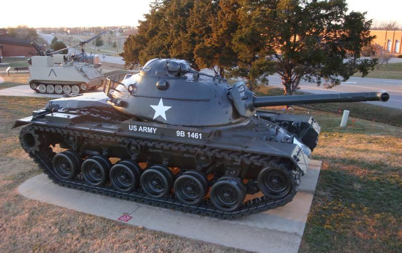

M67 Zippo
Призначення: вогнеметний танк на базі середнього танка M48 Patton. Країна: США. Роки виробництва: 1955-1959. Експлуатація: 1955-1970-ті. Кількість: 109 шт. Озброєння: вогнемет M7-6 (замість основної гармати), 1 × 7,62-мм кулемет, 1 × 12,7-мм кулемет M2. Броня: аналогічна M48 (до 110 мм лоб корпусу). Маневреність: 48 км/год. Екіпаж: 3 особи. Суть у бою: знищення живої сили ворога, вогневих точок та розчищення джунглів. Вогнеметна суміш подавалася під високим тиском, що дозволяло "стріляти" вогнем на відстань до 200 метрів. Відомі битви: Війна у В'єтнамі (битва за Хюе). Цікава особливість: кожух вогнемета був спеціально зроблений товстим і коротким, щоб здалеку танк був схожий на звичайний M48 з гарматою, щоб ворог не розпізнав вогнеметну машину завчасно. Модифікації: M67: базова версія на шасі M48. M67A1: версія на базі шасі M48A1. M67A2: версія на базі шасі M48A2, що відрізнялася кращою трансмісією та двигуном.
